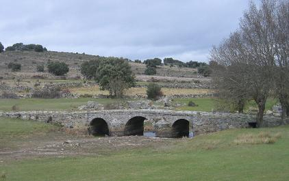

|
BERMILLO DE SAYAGO
|
| Estrabón, decía los sayagueses y lusitanos eran poco tratables y algo salvajes, duermen en el suelo, se dejan crecer el pelo muy largo, visten capas negras y carecen de dinero por lo que hacen frecuentes intercambios. |
| Los romanos construyen en la comarca sayaguesa una extensa red de calzadas. Las
más importantes de estas calzadas fueron la de Zamora a Fermoselle, la de
Zamora a Miranda do Douro y la de Zamora a Ledesma. Otras vías de menor
importancia enlazaban por el interior las calzadas principales. Son muchas las muestras dejadas en las tierras de Sayago por los romanos. Castros, estelas, monumentos funerarios, sarcófagos y sobre todo fuentes y puentes. El nombre de la comarca de Sayago parece derivar de los romanos del topónimo Sagia y de los celtas Acu en recuerdo de la deuda que los habitantes de esta tierra tuvieron que pagar a los romanos una vez que estos lograron someterlos. |
 |
| CIUDADES HISPANIA | PUENTES ROMANOS | TOPÓNIMOS |